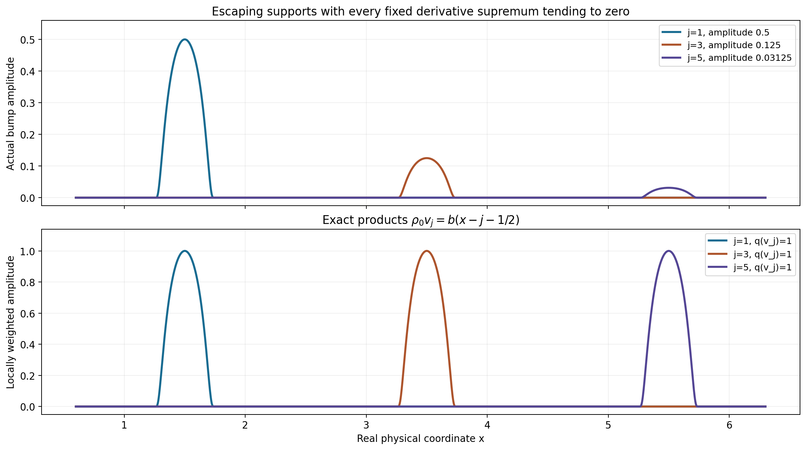
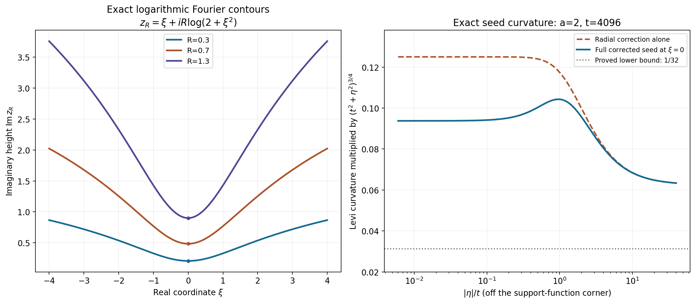

Learning compact-test neighborhoods through the Fourier transform
The complete lesson proves three descriptions of the same topology. Compact supports let each fixed stage use finitely many derivatives, but the required orders and constants can change along an exhaustion. The Fourier description consequently uses a whole sequence of support functions and decay powers. A carefully stabilized maximum then gives one PSH integral norm whose small ball lies in any prescribed neighborhood.
Read TP1–TP7, the complete proof. The examples below distinguish real-frequency decay, imaginary-frequency support growth, contour geometry and local curvature.
Worked example 1. Small moving bumps need not be small in the test topology
Let \(X=\mathbb R\), \(K_j=[-j,j]\), and define the compact smooth bump
\[ b(x)= \begin{cases} \exp(1-1/(1-16x^2)),&|x|<1/4,\\ 0,&|x|\ge1/4. \end{cases} \qquad v_j(x)=2^{-j}b(x-j-\tfrac12). \tag{L153.1} \]The exponential vanishes with all derivatives at the endpoints: each derivative inside is a polynomial in \(1/(1-16x^2)\) and \(x\), times the exponential, and an exponential dominates every such power. Thus \(b\) and \(v_j\) are smooth. Also \(0\le b\le1\), \(b(0)=1\), and
\[ \sup_x|D^Nv_j(x)|=2^{-j}\sup_x|D^Nb(x)|\longrightarrow0 \quad\text{for every fixed }N. \tag{L153.2} \]Their supports lie in \([j+\frac14,j+\frac34]\), so no one compact set contains them.
Choose a smooth \(0\le\chi\le1\), equal to one on \([-1/4,1/4]\), supported in \((-2/5,2/5)\), and put
\[ \rho_0(x)=\sum_{j\ge1}2^j\chi(x-j-\tfrac12),\qquad q(v)=\sup_x|\rho_0(x)v(x)|. \tag{L153.3} \]The supports in this sum are disjoint and locally finite. Hence \(\rho_0\) is smooth. On every fixed compact support, \(q\) is bounded by a finite constant times the zeroth derivative seminorm; it is a continuous seminorm of the compact-test inductive topology. Yet \(q(v_j)=1\) exactly. Therefore \(v_j\) does not converge to zero in that topology, although every fixed global derivative supremum tends to zero.
This example gives a concrete reason for the varying stage constants. The topology can see amplitudes after they are multiplied by a weight growing along an escaping support.

Figure TP-A. The top profiles are the exact \(v_j\) for three specified translated supports; the lower profiles are their exact weighted products \(\rho_0v_j=b(x-j-\frac12)\). Their amplitudes shrink above but remain one below. The visible finite selections do not replace the locally finite infinite coefficient function in L153.3.
Worked example 2. A logarithmic contour has its own Jacobian
For the same bump let \(F_b(z)=\int_{-1/4}^{1/4}b(s)e^{-isz}\,ds\). In one dimension, with \(\eta=1\), the contour is
\[ z_R(\xi)=\xi+iR\log(2+\xi^2),\qquad J_R(\xi)=1+i\frac{2R\xi}{2+\xi^2}. \tag{L153.4} \]Its imaginary height at zero is \(R\log2>0\) for \(R>0\). The Jacobian is not the arc-length element: the Fourier contour uses the complex differential \(dz=J_Rd\xi\).
For every real \(x\) and fixed \(R\), the proved homotopy gives
\[ b(x)=\frac1{2\pi}\int_{\mathbb R} F_b(z_R(\xi))e^{ixz_R(\xi)}J_R(\xi)\,d\xi. \tag{L153.5} \]At \(x=2\), the true value is zero. The entire support-growth factor in the integrand obeys
\[ e^{H_{[-1/4,1/4]}(\operatorname{Im}z_R) -2\operatorname{Im}z_R} =(2+\xi^2)^{-7R/4}. \tag{L153.6} \]This decays as the contour moves upward. At an interior point such as \(x=0\), that same factor can grow; TP11's arbitrary polynomial decay still makes the contour identity valid. Thus the contour is used with the direction supplied by an exterior separation gap, rather than one imaginary direction assumed to help everywhere.
The determinant bound is exact here: \(|J_R|=\sqrt{1+[2R\xi/(2+\xi^2)]^2}\le\sqrt{1+R^2/2}\). The last inequality follows because \(2|\xi|/(2+\xi^2)\) is maximal at \(|\xi|=\sqrt2\), where it equals \(1/\sqrt2\).
Worked example 3. Correcting a negative logarithmic seed
Take one complex dimension, \(K=[-1,1]\), \(a=2\), \(t=4096\), and write \(z=\xi+i\eta\). The seed is
\[ \psi(z)=|\eta|-2\log(t^2+\xi^2+\eta^2)+p_t(\eta),\qquad p_t(\eta)=\frac{\sqrt{t^2+\eta^2}}{\sqrt t} -(t^2+\eta^2)^{1/4}. \tag{L153.7} \]The support term \(|\eta|\) has a positive distributional Hessian at \(\eta=0\), but away from that line its classical Hessian is zero. Without \(p_t\), the negative logarithm has negative Levi curvature and would not be PSH.
Let \(s=t^2+\eta^2\) and \(q=t^2/s\). At \(\xi=0,\eta\ne0\), direct differentiation gives
\[ s^{3/4}\partial_z\bar\partial_z\psi(i\eta) =\frac14(q^{3/4}+\tfrac14-\tfrac34q) -\frac a{\sqrt t}q^{5/4} \ge\frac1{32}. \tag{L153.8} \]Here \(\sqrt t=64=32a\). The radial correction's normalized real Hessian is at least \(1/4\); division by four gives \(1/16\), and the negative term has magnitude at most \(a/\sqrt t=1/32\). At other real frequencies the logarithmic negative term is smaller, so the same lower bound holds. At \(\eta=0\), the additional positive measure from \(|\eta|\) is kept in the distributional interpretation.
The gradient bound is also quantitative:
\[ |\nabla\psi|\le1+a/t+t^{-1/2} =1+\tfrac1{2048}+\tfrac1{64}<\log4096 . \tag{L153.9} \]Therefore on \(|\eta|>t\) it is at most \(\log(1+|\eta|)\). The positive curvature has scale \(s^{-3/4}\); a summary replacing this by \((1+\eta^2)^{-3/2}\) would describe a weaker, incorrect source target.

Figure TP-B. The left curves are the complete complex contours L153.4 with their positive height at \(\xi=0\). The right curves show the exact classical Levi form in L153.8, normalized by \(s^{-3/4}\), and the radial correction before subtracting the logarithm. The lower bound is \(1/32\). The \(|\eta|\) support term contributes an additional positive measure at zero; the plot describes its classical part off that line.
Worked example 4. An explicit weighted smooth-test neighborhood
Let \(X=(-1/2,1/2)\) and choose
\[ \phi(\xi+i\eta)=p_1(\eta) =\sqrt{1+\eta^2}-(1+\eta^2)^{1/4}. \tag{L153.10} \]It is independent of \(\xi\), has gradient bounded by one, and has Levi form at least \(\frac1{16}(1+\eta^2)^{-3/4}\). For \(M=\sqrt{1+\eta^2}\), the square inequality \((\sqrt M-2)^2\ge0\) gives \(\sqrt M\le M/4+1\). Hence
\[ \phi\ge\tfrac34M-1\ge\tfrac34|\eta|-1. \tag{L153.11} \]Any compact \(K\Subset X\) has \(H_K(\eta)\le a_K|\eta|\) for some \(a_K<1/2\). Thus \(e^{-\phi}\le e\,e^{-H_K(\eta)}\), proving the support-growth condition with \(N_K=0\). All three properties of TP25 hold.
For the bump \(b\) of Example 1, supported in \([-1/4,1/4]\), real-plane Plancherel at each fixed \(\eta\) yields
\[ P_\phi(b)^2 =2\pi\int_{\mathbb R}e^{-2p_1(\eta)} \int_{-1/4}^{1/4}|b(x)|^2e^{2x\eta}\,dx\,d\eta \le4\pi e^2\|b\|_{L^2}^2 . \tag{L153.12} \]Indeed the inner integral is at most \(e^{|\eta|/2}\|b\|_2^2\), and L153.11 bounds the outer factor by \(e^2e^{-3|\eta|/2}\), leaving \(e^2e^{-|\eta|}\). Its integral is \(2e^2\). Consequently any \(|\epsilon|<[2\sqrt\pi e\|b\|_2]^{-1}\) gives \(P_\phi(\epsilon b)<1\).
The same norm is finite and continuous on every compact smooth-support stage in \(X\), by TP11 and TP25. Its unit ball is therefore a genuine zero-neighborhood in the test topology. This one explicit neighborhood does not claim that one fixed norm generates all the inductive topology; TP5 constructs a suitable weight for each prescribed convex neighborhood.
Exercises with complete solutions
Exercise 1. Verify the infinite multiindex sum used to turn exterior derivative bounds into a strict coefficient-seminorm bound.
Solution 1. For \(n\) coordinates,
\[ \sum_{\alpha\in\mathbb N^n}2^{-n-1-|\alpha|} =2^{-n-1}\prod_{l=1}^n\sum_{r=0}^\infty2^{-r} =2^{-n-1}2^n=\tfrac12. \tag{L153.13} \]The sums are nonnegative, so successive products and summation are valid. This strict factor \(1/2\) ensures a bound below one even when the exterior restrictions themselves use \(\le\).
Exercise 2. Why are the coefficients in TP7 majorized by smooth functions instead of being defined directly from \(|D^\beta\psi_j|\)?
Solution 2. A smooth real function can cross zero with nonzero derivative, in which case its absolute value is not differentiable. The theorem explicitly requires smooth coefficient functions. For each compact derivative support, take a nonnegative smooth cutoff equal to one there and multiply it by the finite derivative supremum. This dominates the absolute derivative while remaining smooth. Enlarging only within annular neighborhoods that avoid successively larger \(K_j\)'s preserves local finiteness. The product-rule bound TP8 then holds with the stated smooth coefficients.
Exercise 3. Prove the rank-one determinant formula for \(I+uv^{\mathsf T}\), and apply it to L153.4.
Solution 3. Expand the determinant column by column. The term using only the identity columns is one. Every term using two added columns vanishes because those columns are multiples of \(u\). The term using only added column \(j\) is \(u_jv_j\). Therefore \(\det(I+uv^{\mathsf T})=1+\sum_ju_jv_j\). With \(u=iR\eta\) and \(v=\nabla\ell\) it gives TP13. For \(n=1,\eta=1\), \(\ell'=2\xi/(2+\xi^2)\), giving the exact complex differential L153.4.
Exercise 4. For \(K_{j-1}=[-(j-1),j-1]\) and \(K_j=[-j,j]\), compute the exterior separation and the later-term support gap.
Solution 4. For \(x>j\) choose \(\eta=1\), and for \(x<-j\) choose \(\eta=-1\). In both cases \(x\eta-H_{K_{j-1}}(\eta)=|x|-(j-1)>1\). The uniform permissible gap is \(c_j=1\). For \(k\ge j\), \(H_{K_k}(\eta)-H_{K_{j-1}}(\eta)-c_j=k-(j-1)-1=k-j\). Thus \(b_{jk}=k-j\), and a sufficient tail decay power is
\[ M_k\ge L_j+2R_j(k-j)+n+1. \tag{L153.14} \]The exponent changes with the later carrier; holding it fixed independently of \(k\) would not control that tail.
Exercise 5. Justify the vanished boundary flux in TP14 for the bump at a fixed \(x,R\).
Solution 5. On a real cube boundary \(|\xi|\ge A\), TP11 supplies every integer decay power \(L\). The polynomial \(z^\alpha\) costs at most \(|\alpha|\) powers, the logarithmic imaginary displacement costs at most \(2R(r_S+|x|)\) powers, the face volume costs \(n-1\), and the flux has one logarithm. Choosing \(L>|\alpha|+2R(r_S+|x|)+n+2\) leaves a negative power which tends to zero even after multiplication by that logarithm. The bound is uniform in the homotopy parameter \(s\in[0,1]\), so integration in \(s\) does not change the conclusion. This proves the identity without replacing the contour Jacobian by one.
Exercise 6. Explain how the diagonal envelope choices avoid circularity, and why its infinite sum can be made finite everywhere.
Solution 6. At step \(k\), the earlier coefficients and powers are already fixed. They determine the finite early contribution used to choose \(R_k\). Then choose \(M_k\) to satisfy the finitely many power requirements for every exterior index \(j\le k\), and finally choose \(d_k>0\) below the finitely many corresponding coefficient thresholds. Increasing \(M_k\) helps all earlier inequalities. Add \(d_k\le2^{-k}e^{-k(1+r_{K_k})}\). On any fixed imaginary strip \(|\eta|\le A\), all \(k\ge A\) terms are bounded by \(2^{-k}e^{-k}\), uniformly in real frequency. The early terms are finite in number. Thus the envelope converges uniformly on that strip and is finite everywhere. No yet-unchosen tail coefficient is used to choose an earlier contour.
Exercise 7. Differentiate the radial correction and recover its exact \(-3/4\) lower curvature scale.
Solution 7. Write \(p_t=g(s)\), \(s=t^2+|\eta|^2\), \(g(s)=t^{-1/2}s^{1/2}-s^{1/4}\). Its real transverse eigenvalue is \(2g'\), and its real radial eigenvalue is \(2g'+4|\eta|^2g''\). Direct differentiation gives normalized values \(t^{-1/2}s^{1/4}-1/2\ge1/2\) and \(q^{3/4}+1/4-3q/4\ge1/4\), respectively, where \(q=t^2/s\). Because a function independent of \(\xi\) has complex Hessian one quarter of its real \(\eta\)-Hessian, its Levi form is at least \(\frac1{16}s^{-3/4}|w|^2\). The power is \(-3/4\) of \(t^2+|\eta|^2\), equivalently \(-3/2\) of its square root; those two variables must not be conflated.
Exercise 8. Show why whole-strip stabilization of \(\psi_j-G_j\) is possible even at arbitrarily large real frequency.
Solution 8. The powers \(a_j\) and parameters \(t_j\) are nondecreasing and \(t_j\ge1\). Therefore
\[ -a_j\log(t_j^2+|z|^2) +a_1\log(t_1^2+|z|^2)\le0. \tag{L153.15} \]On \(|\eta|\le B_j\) the support-function differences and radial-correction differences are bounded independently of \(\xi\). Their sum therefore bounds \(\psi_j-\psi_1\) uniformly over the whole strip. A finite \(G_j\) makes the new branch smaller than the first branch there. If the logarithmic powers were allowed to decrease, their difference could instead tend to \(+\infty\) with \(|\xi|\), which no finite vertical shift could fix.
Exercise 9. Derive the one extra polynomial power used in TP33 from the gradient and ball mean estimate.
Solution 9. Along a unit segment, the gradient bound gives \(\phi(z+w)-\phi(z)\le C_b+\log(2+|\eta|)\). The unit-ball mean for \(|F|^2\), followed by the weighted integral and a square root, consequently gives
\[ |F(z)|\le(n!/\pi^n)^{1/2} e^{\phi(z)+C_b}(2+|\eta|)P_\phi(v). \tag{L153.16} \]Since \(2+|\eta|\le2+|z|\), one additional negative power in each seed absorbs it. The constant \(e^{C_b}\) is absorbed by the vertical shift. It is not a polynomial factor of degree \(C_b\).
Exercise 10. Verify that the explicit weight in Example 4 works for a non-centered compact interval \(K=[a,b]\Subset(-1/2,1/2)\).
Solution 10. Its support function is \(b\eta\) for \(\eta\ge0\), and \(a\eta\) for \(\eta<0\). In either case it is at most \(r_K|\eta|\), where \(r_K=\max(|a|,|b|)<1/2\). L153.11 therefore gives \(\phi-H_K\ge(3/4-r_K)|\eta|-1\ge-1\). Thus \(e^{-\phi}\le e\,e^{-H_K}\) with no polynomial factor, while the gradient and strict curvature are unchanged. On a fixed smooth support the exact complex decay TP11 makes the entire weighted integral finite and bounds it by finitely many derivative suprema. This verifies the correct topology on each stage without requiring the interval to be symmetric.
The numerical checks evaluate actual compact-bump Fourier integrals, complex-contour Jacobians and homotopy derivatives, the radial correction's real and complex Hessians, and the explicit weighted integral. They supplement the full arguments; formal target completion does not complete the chapter's separate embedded exercises or the rest of the assigned course.
Complete proof
Original proof exposition by GPT-6.1 Sol (OpenAI), Ultra, October 2026. CC0 1.0.
We prove four exact descriptions of compact smooth-test neighborhoods, their exhaustion-wise Fourier-envelope description, and their description by a single strict PSH weighted integral. The proof includes the complete logarithmic-contour homotopy and every successive choice needed for its infinite envelope. Its weight construction retains the actual curvature exponent and the whole real-frequency extent of each stabilized imaginary strip.
Let \(X\subset\mathbb R^n\) be open and write \(\mathcal D(X)=C_c^\infty(X)\), with \(D=-i\partial\). Choose a compact exhaustion
\[ K_0=\varnothing,\qquad K_j\subset\operatorname{int}K_{j+1}, \qquad \bigcup_{j\ge1}K_j=X. \tag{TP1} \]Empty initial terms are harmless and can be discarded. The space \(\mathcal D_{K_j}\) of smooth functions supported in \(K_j\) has the seminorms \(p_{j,N}(v)=\max_{|\alpha|\le N}\sup_x|D^\alpha v(x)|\). The locally convex inductive topology on \(\mathcal D(X)\) is generated by all seminorms whose restrictions to these spaces are continuous. Cofinality of the exhaustion gives the same topology as using every compact support set.
TP1. The four exact neighborhood descriptions
Theorem TP1. For a convex subset \(V\subset\mathcal D(X)\), these four statements are equivalent:
- \(V\) is a neighborhood of zero in that inductive topology.
- There are integers \(N_j\ge0\) and numbers \(\epsilon_j>0\) such that \(V\) contains every finite sum \(\sum_jv_j\), with \(v_j\in\mathcal D_{K_j}\) and \(p_{j,N_j}(v_j)<\epsilon_j\).
- There are smooth coefficient functions \(\rho_\alpha\in C^\infty(X)\), indexed by multiindices, whose supports form a locally finite family, such that \(V\) contains every \(v\) satisfying
- There are integers \(L_j\ge0\) and positive \(\delta_j\), \(j\ge0\), such that \(V\) contains every compact smooth \(v\) satisfying
In particular the \(j\)-condition is on the entire exterior, not on one shell.
We first justify the fixed-stage convex criterion rather than treating it as an unexplained definition. If \(V\) is a neighborhood, each stage intersection is a neighborhood by continuity of inclusion. Conversely suppose every stage intersection is a neighborhood. Then \(0\in V\). Set
\[ W=\{v:\lambda v\in V\text{ for every complex }|\lambda|\le1\}. \tag{TP4} \]It is convex and balanced. On any fixed stage a sufficiently small ball of \(p_{j,N}\) is contained in \(V\), and all its complex scalar contractions are in that same ball. Thus \(W\) contains that stage ball. It is absorbing, since every compact smooth function lies in some stage. Its Minkowski gauge is a seminorm continuous on every stage and hence in the inductive topology just described. Its open unit ball lies in \(W\subset V\): gauge less than one implies membership in \(tW\) for some \(t<1\), and balancedness gives \(tW\subset W\). This proves the criterion for arbitrary convex \(V\), without assuming \(V\) was balanced.
(1) implies (2). In each stage choose \(N_j,\epsilon_j\) so that
\[ \{v\in\mathcal D_{K_j}:p_{j,N_j}(v)<2^j\epsilon_j\}\subset V. \tag{TP5} \]For a finite admissible sum \(v=\sum_{j\in J}v_j\), its summands \(2^jv_j\) are in \(V\). Since \(\sum_{j\in J}2^{-j}<1\) and \(0\in V\), write \(v\) as their convex combination together with the remaining coefficient on zero. This proves inclusion.
(2) implies (3). Choose \(0\le\theta_j\le1\), smooth and supported in \(\operatorname{int}K_j\), with \(\theta_j=1\) near \(K_{j-1}\); take \(\theta_0=0\). Such cutoffs follow by covering \(K_{j-1}\) with finitely many small balls compact inside \(\operatorname{int}K_j\) and combining their usual smooth steps. Define
\[ \psi_j=\theta_j-\theta_{j-1}. \tag{TP6} \]The signs of \(\psi_j\) need not be positive. Its support lies in \(K_j\) and vanishes near \(K_{j-2}\) for \(j\ge3\). The family and all its derivatives are locally finite. On any compact support, \(\sum_j\psi_j=1\) and only finitely many terms are nonzero. Thus \(v=\sum_j\psi_jv\) is a finite decomposition.
For each needed derivative \(\beta\), \(|\beta|\le N_j\), of each active \(\psi_j\), choose a nonnegative smooth compact majorant \(b_{j,\beta}\ge|D^\beta\psi_j|\), supported in the same locally finite annular region enlarged slightly. One construction is a constant times a smooth cutoff equal to one on the compact derivative support; the constant is its finite supremum. For the few initial terms use cutoffs in \(K_2\). For later \(j\), these enlarged supports can avoid \(K_{j-3}\), preserving local finiteness. Put
\[ \rho_\alpha(x)= \sum_{j:N_j\ge|\alpha|} \frac1{\epsilon_j} \sum_{|\alpha+\beta|\le N_j} \binom{\alpha+\beta}{\alpha}\,b_{j,\beta}(x). \tag{TP7} \]This is a locally finite sum of smooth nonnegative functions. On any compact set only finitely many \(j\)'s contribute, and among those only finitely many \(\alpha\)'s occur, so the coefficient supports are a locally finite family as required.
For \(v_j=\psi_jv\), the product rule for \(D=-i\partial\) gives, for \(|\gamma|\le N_j\),
\[ \frac{|D^\gamma v_j(x)|}{\epsilon_j} \le\sum_{\alpha+\beta=\gamma} \binom{\gamma}{\alpha} \frac{b_{j,\beta}(x)}{\epsilon_j}|D^\alpha v(x)| \le\sum_\alpha|\rho_\alpha(x)D^\alpha v(x)|. \tag{TP8} \]Taking a supremum bounds this by \(Q_\rho(v)\). If TP2 is less than one, every \(v_j\) therefore satisfies the condition in (2), giving \(v\in V\). The majorants make the coefficients actually smooth; replacing them by the nonsmooth absolute values of derivatives would not meet statement (3).
(3) implies (4). On \(K_{j+1}\) only finitely many coefficient supports meet. Let \(I_j\) be their multiindices and choose
\[ L_j\ge\max_{\alpha\in I_j}|\alpha|,\qquad \delta_j>0\quad\hbox{so small that}\quad \delta_j\sup_{K_{j+1}}|\rho_\alpha| \le2^{-n-1-|\alpha|}\quad(\alpha\in I_j). \tag{TP9} \]If \(I_j\) is empty, use \(L_j=0,\delta_j=1\). TP3 then bounds each product on the shell \(K_{j+1}\setminus K_j\) by the right side of TP9. These shells, together with \(K_1\) for \(j=0\), cover \(X\). For every \(\alpha\) its global supremum has the same bound, because the coefficient vanishes on shells where it is not in \(I_j\). Hence
\[ Q_\rho(v)\le \sum_{\alpha\in\mathbb N^n}2^{-n-1-|\alpha|} =\tfrac12<1. \tag{TP10} \]The series identity is the product of \(n\) geometric series \(\sum_{l\ge0}2^{-l}=2\). This leaves a strict margin even though the exterior bounds themselves are non-strict. The bound is imposed on the whole exterior as TP3 specifies; the shells are used only to prove its consequence.
(4) implies (1). Fix a compact support \(S\Subset X\). For all sufficiently large \(j\), \(S\) is in the interior of \(K_j\); the corresponding exterior restrictions are automatic because every derivative of \(v\) vanishes outside its support. Only finitely many \(j\)'s remain. Choose the maximum of their derivative orders and half the minimum of their positive \(\delta_j\)'s. The resulting small fixed-support seminorm ball satisfies every restriction in TP3. Thus \(V\) has a zero-neighborhood on every support stage. The convex criterion proved after TP4 gives (1). This proves all four implications and the exact first source theorem. \(\square\)
TP2. Exact entire decay on a fixed smooth support
Write \(F_v(z)=\int v(x)e^{-ix\cdot z}\,dx\). If \(v\) is supported in a compact \(S\), integration by parts in the real variables gives \(z^\alpha F_v=F_{D^\alpha v}\), and hence, for every integer \(L\ge0\),
\[ |F_v(z)|\le C_{n,L}(1+|z|)^{-L}e^{H_S(\operatorname{Im}z)} \sum_{|\alpha|\le L}\|D^\alpha v\|_{L^1}. \tag{TP11} \]For \(|z|\ge1\), choose a coordinate with \(|z_l|\ge|z|/\sqrt n\) and use its \(L\)-th derivative; for \(|z|<1\), use the zeroth derivative. The comparison of \(|z|^L\) with \((1+|z|)^L\) gives the displayed fixed constant. The integrable norms are bounded by finitely many derivative suprema times the volume of a fixed bounded set containing \(S\). This proves the whole-complex estimate, rather than only real-frequency decay.
Fourier inversion here needs no additional contour theorem. Insert \(e^{-\epsilon|\xi|^2}\) into the real Fourier integral. Fubini and the elementary Gaussian integral identify it with convolution of \(v\) and \((4\pi\epsilon)^{-n/2}e^{-|x|^2/(4\epsilon)}\). The latter tends to \(v(x)\): split the integral into a small neighborhood, where uniform continuity applies, and its Gaussian tail. TP11 on the real plane gives an integrable majorant, so dominated convergence removes the multiplier. The same argument applies to every derivative.
TP3. The complete logarithmically shifted contour
For a real unit vector \(\eta\), \(R\ge0\), and real \(\xi\), put
\[ \ell(\xi)=\log(2+|\xi|^2),\qquad z_s(\xi)=\xi+i sR\eta\,\ell(\xi)\quad(0\le s\le1). \tag{TP12} \]The complex Jacobian of this real parametrization is the rank-one determinant
\[ J_s(\xi)=\det(I+i sR\eta(\nabla\ell)^{\mathsf T}) =1+i sR\,\eta\cdot\nabla\ell,\qquad |J_s|\le1+R. \tag{TP13} \]The determinant identity follows by multilinearity: selecting two added rank-one columns gives zero; selecting one gives its diagonal contribution. Also \(|\nabla\ell|=2|\xi|/(2+|\xi|^2)\le1\).
For any entire scalar \(H\), the chain rule gives the exact homotopy identity
\[ \partial_s[H(z_s)J_s] =\sum_{l=1}^n\partial_{\xi_l} [iR\eta_l\ell(\xi)H(z_s)]. \tag{TP14} \]Indeed its right side is \(iR(\eta\cdot\nabla\ell)H+ iR\ell(\eta\cdot\partial_zH)(1+i sR\eta\cdot\nabla\ell)\), which is its left side. Thus only the real fundamental theorem of calculus on a cube is required for the contour homotopy.
Take \(H(z)=z^\alpha F_v(z)e^{ix\cdot z}\), for fixed real \(x\) and a compact smooth \(v\) supported in \(S\). On the boundary of \([-A,A]^n\), TP11 gives, uniformly in \(s\) and unit \(\eta\),
\[ |H(z_s)|\le C_L(1+A)^{|\alpha|-L+2R(r_S+|x|)} \quad(A\ge1),\qquad r_S=\sup_{y\in S}|y|. \tag{TP15} \]Here \(|z_s|\ge|\xi|\ge A\), while its imaginary part is \(sR\eta\log(2+|\xi|^2)\); the exponential growth is bounded by a constant times \(A^{2R(r_S+|x|)}\). Choose \(L>|\alpha|+2R(r_S+|x|)+n+2\). The boundary flux from TP14 has at most an extra \(\log(2+nA^2)\) and face area \(C_nA^{n-1}\), so its integral tends to zero. TP11 also gives an integrable bound for the full cube integrals, uniformly in \(s\). Integrate TP14 over the cube and over \(s\), then pass to \(A=\infty\). Together with real inversion this proves
\[ D^\alpha v(x)=(2\pi)^{-n} \int_{\mathbb R^n}z_1(\xi)^\alpha F_v(z_1(\xi)) e^{ix\cdot z_1(\xi)}J_1(\xi)\,d\xi. \tag{TP16} \]This is an absolutely convergent identity for each fixed \(x,R,\eta,\alpha\). We have verified the homotopy boundary, the differential and its Jacobian, rather than assuming that a variable-height contour has the same measure as the real plane.
TP4. The exhaustion-wise Fourier-envelope theorem
Assume now that \(X\) is convex and the exhaustion \(K_j\) is also convex and nonempty for \(j\ge1\).
Theorem TP4. A convex \(V\subset\mathcal D(X)\) is a zero-neighborhood if and only if there are positive numbers \(d_j,M_j\), \(j\ge1\), such that \(V\) contains every \(v\in\mathcal D(X)\) with
\[ |F_v(z)|\le B(z):= \sum_{j=1}^\infty d_j(1+|z|)^{-M_j} e^{H_{K_j}(\operatorname{Im}z)} \quad(z\in\mathbb C^n). \tag{TP17} \]We may choose the \(M_j\) increasing positive integers and the series locally uniformly convergent.
First suppose TP17 implies membership in \(V\). On each stage \(\mathcal D_{K_j}\), TP11 with \(L\ge M_j\) makes its single \(j\)-term dominate \(F_v\) if a fixed finite derivative seminorm of \(v\) is sufficiently small. Thus \(V\) contains a stage neighborhood. Its convexity and TP4's fixed-stage criterion prove that it is a zero-neighborhood.
Conversely obtain \(L_j,\delta_j\) of the exterior criterion TP3. The envelope will imply all those bounds. To avoid referring to the support function of the empty set, handle \(j=0\) and \(j=1\) by real inversion alone. For either order \(L_j\), if \(M_k\ge L_j+n+1\), the \(k\)-term contributes at most
\[ C_n d_k,\qquad C_n=(2\pi)^{-n}\int_{\mathbb R^n}(1+|\xi|)^{-n-1}d\xi<\infty \tag{TP18} \]to every derivative up to that order, everywhere in real space. We will make these sums smaller than their respective \(\delta_j\)'s.
For \(j\ge2\), let \(c_j=\operatorname{dist}(K_{j-1},\mathbb R^n\setminus\operatorname{int}K_j)>0\). If \(x\notin K_j\), let \(p\) be its nearest point in the compact convex \(K_{j-1}\), and put \(\eta=(x-p)/|x-p|\). The elementary nearest-point inequality, obtained by differentiating \(|x-(p+t(y-p))|^2\) at \(t=0+\), gives \((x-p)\cdot(y-p)\le0\) for \(y\in K_{j-1}\). Thus
\[ x\cdot\eta-H_{K_{j-1}}(\eta)=|x-p|\ge c_j. \tag{TP19} \]This supplies a uniform separation gap for the entire exterior.
Suppose all \(d_k,M_k\) with \(k<j\) have already been chosen. Apply TP16 using the vector just found. For an earlier \(k<j\), nesting gives \(H_{K_k}(\eta)-x\cdot\eta\le-c_j\). Set \(p_{jk}=\max(L_j-M_k,0)\). Since \(|z_1|\le C(1+R)(1+|\xi|)\), that term's derivative bound is at most
\[ C d_k(1+R)^{p_{jk}+1} \int(1+|\xi|)^{p_{jk}}(2+|\xi|^2)^{-Rc_j}d\xi \longrightarrow0\quad(R\to\infty). \tag{TP20} \]For the limit, split the last negative power into two equal powers. One is at most \(2^{-Rc_j/2}\), and the other dominates a fixed integrable power after \(R\) is large enough. This exponential factor outweighs the displayed polynomial in \(R\). Choose \(R_j\) so that the finite sum of earlier terms is below \(\delta_j/2\). The choice is uniform in \(x\notin K_j\) and its unit separation vector.
For \(k\ge j\), choose the fixed nonnegative number
\[ b_{jk}=\max\!\left(0, \sup_{|\eta|=1}[H_{K_k}(\eta)-H_{K_{j-1}}(\eta)-c_j]\right). \tag{TP21} \]Continuity of the support functions and compactness of the sphere make it finite. If \(M_k\ge L_j+2R_jb_{jk}+n+1\), its term in TP16 is bounded by
\[ C_{jk}d_k,\qquad C_{jk}=(2\pi)^{-n}(1+R_j)2^{R_jb_{jk}} \int(1+|\xi|)^{-n-1}d\xi . \tag{TP22} \]Indeed \(|z_1|\ge|\xi|\), so the nonpositive exponent \(L_j-M_k\) can be bounded on the real plane, and \((2+|\xi|^2)^{R_jb_{jk}}\le 2^{R_jb_{jk}}(1+|\xi|)^{2R_jb_{jk}}\).
All successive choices are now explicit. Set \(M_0=0\). At step \(k\), choose \(R_k\) from the earlier finite list when \(k\ge2\). For \(j=0,1\) regard the real-plane constants TP18 as already fixed, without a separation vector. Choose an integer \(M_k\) greater than \(M_{k-1}\) and satisfying every power requirement for \(0\le j\le k\). Then choose \(d_k>0\) so small that
\[ C_{jk}d_k\le2^{-k-2}\delta_j\ (0\le j\le k),\qquad d_k\le2^{-k}e^{-k(1+r_{K_k})}, \tag{TP23} \]using \(C_{0k}=C_{1k}=C_n\). There are only finitely many requirements at this step, and increasing \(M_k\) only helps them. This gives positive coefficients. The last restriction implies local uniform convergence of TP17: on \(|\operatorname{Im}z|\le A\), all \(k\ge A\) terms are bounded by \(2^{-k}e^{-k}\).
For \(j\ge2\), the earlier contribution is below \(\delta_j/2\), and the later sum is bounded by \(\delta_j\sum_{k\ge j}2^{-k-2}<\delta_j/2\). For \(j=0,1\), all terms are controlled by TP18 and TP23. Absolute convergence and Tonelli justify summing these nonnegative derivative bounds. The result is TP3 for every required derivative and every point of each entire exterior. Hence TP17 implies \(v\in V\), proving the exact Fourier-envelope theorem. \(\square\)
TP5. A single strict PSH weighted neighborhood
Theorem TP5. For open convex \(X\) and convex \(V\subset\mathcal D(X)\), \(V\) is a zero-neighborhood if and only if it contains
\[ \mathcal U_\phi= \left\{v:\int_{\mathbb C^n}|F_v(z)|^2e^{-2\phi(z)}\,dV(z)<1\right\}, \tag{TP24} \]for a finite real function \(\phi\) with all three properties
\[ \begin{aligned} e^{-\phi(\xi+i\eta)} &\le C_K(1+|\xi+i\eta|)^{N_K}e^{-H_K(\eta)} && (K\Subset X\text{ compact convex}),\\ |\nabla\phi(\xi+i\eta)| &\le C_b+\log(1+|\eta|) &&\text{almost everywhere; }\phi\text{ locally Lipschitz},\\ \mathcal L_\phi(w) &\ge c(1+|\eta|^2)^{-3/4}|w|^2 &&\text{distributionally, }c>0 . \end{aligned} \tag{TP25} \]The last property includes plurisubharmonicity. Its source exponent is \(-3/4\), as verified on the actual statement and seed-proof pixels.
For the easy implication, TP11 and the first part of TP25 show that this weighted transform norm is finite and continuous on each fixed smooth-support stage: choose a compact convex \(K\Subset X\) containing that support and \(L>N_K+n\). Its squared integrand is bounded by a finite derivative seminorm squared times \((1+|z|)^{-2(L-N_K)}\), integrable in real dimension \(2n\). The triangle inequality in \(L^2\) makes the resulting expression a seminorm. It is therefore continuous in the inductive topology. Its open unit ball is a zero-neighborhood, as is every \(V\) containing it.
For the converse use the increasing integer powers and coefficients in TP17. Enlarge each successive \(t_j\ge1\), strictly increasing to infinity, as specified below, and set
\[ a_j=\frac{M_{j+1}+1}{2},\qquad M_t(\eta)=(t^2+|\eta|^2)^{1/2},\qquad p_t(\eta)=\frac{M_t(\eta)}{\sqrt t}-\sqrt{M_t(\eta)}, \qquad \psi_j(z)=H_{K_j}(\eta)-a_j\log(t_j^2+|z|^2)+p_{t_j}(\eta). \tag{TP26} \]Every \(a_j\) is nondecreasing. We next prove, rather than presume, the gradient and curvature needed for these varying seeds.
TP6. Full seed bounds and their uniform active region
The support function \(H_K(\eta)=\sup_{x\in K}x\cdot\eta\) is convex, globally Lipschitz with constant \(r_K\), and PSH as a function of \(\xi+i\eta\). For the last claim, convolution preserves convexity and gives a nonnegative real Hessian in \(\eta\); the complex Hessian is one quarter of it. Uniform convergence of these regularizations on compact sets passes the line submean inequality and the distributional matrix inequality to the original function.
The ordinary complex Hessian of \(\log(t^2+|z|^2)\) is
\[ \frac{I}{t^2+|z|^2} -\frac{\overline z\,z^{\mathsf T}}{(t^2+|z|^2)^2}, \qquad 0\le\mathcal L_{\log(t^2+|z|^2)}\le (t^2+|z|^2)^{-1}I. \tag{TP27} \]For \(p_t\), let \(s=t^2+|\eta|^2\), \(q=t^2/s\in(0,1]\). Its transverse real Hessian eigenvalue, divided by \(s^{-3/4}\), is \(t^{-1/2}s^{1/4}-\frac12\ge\frac12\). Its radial eigenvalue, with the same normalization, is
\[ q^{3/4}+\tfrac14-\tfrac34q\ge\tfrac14, \quad\text{because }q^{3/4}\ge q. \tag{TP28} \]These follow by differentiating \(t^{-1/2}s^{1/2}-s^{1/4}\) twice. In dimension one only the radial eigenvalue is needed; at \(\eta=0\) the limiting formulas agree. Dividing the real Hessian by four gives
\[ \mathcal L_{p_t}\ge\frac1{16}(t^2+|\eta|^2)^{-3/4}I,\qquad |\nabla p_t|\le t^{-1/2},\qquad p_t\ge0. \tag{TP29} \]The gradient formula is \(\eta[t^{-1/2}/M_t-\frac12M_t^{-3/2}]\), whose bracket is nonnegative and whose norm is at most \(t^{-1/2}\). Positivity of \(p_t\) follows from \(M_t\ge t\).
Choose \(\sqrt{t_j}\ge32a_j=16(M_{j+1}+1)\). The negative logarithmic Hessian in TP27 is then at most \(\frac1{32}(t_j^2+|\eta|^2)^{-3/4}I\). Thus
\[ \mathcal L_{\psi_j}\ge \frac1{32}(t_j^2+|\eta|^2)^{-3/4}I. \tag{TP30} \]For \(|\eta|>t_j\) this is at least \(c_*(1+|\eta|^2)^{-3/4}I\), where \(c_*=2^{-3/4}/32\) is independent of \(j\). The first seed has a global positive bound \(c_1=t_1^{-3/2}/32\) in the same form.
Its global Lipschitz bound is
\[ |\nabla\psi_j|\le r_{K_j}+a_j/t_j+t_j^{-1/2}. \tag{TP31} \]The logarithm's real gradient has norm \(2|z|/(t_j^2+|z|^2)\le1/t_j\). Increase \(t_j\) so that the right side of TP31 is at most \(\log t_j\). This is possible with \(a_j,r_{K_j}\) fixed. On \(|\eta|>t_j\) that gives the uniform bound \(\log(1+|\eta|)\). Set \(C_b\) equal to the finite global Lipschitz bound of the first seed; it will serve for all finite maxima.
Since \(K_j\Subset\operatorname{int}K_{j+1}\), choose \(\rho_j>0\) with \(K_j+\rho_j\overline B\subset K_{j+1}\), and also require \(t_j^{-1/2}\le\rho_j\). Then
\[ H_{K_j}(\eta)+t_j^{-1/2}|\eta|\le H_{K_{j+1}}(\eta),\qquad p_{t_j}(\eta)\le t_j^{-1/2}|\eta|+\sqrt{t_j}. \tag{TP32} \]The second inequality uses \(M_t\le t+|\eta|\) and discards the nonpositive term \(-\sqrt{M_t}\).
TP7. Compatible maxima, finite stabilization and all three properties
Let \(C_{\mathrm{mean}}=(n!/\pi^n)^{1/2}\). Because \(t_j\ge1\), \((t_j^2+|z|^2)^{1/2}\ge(1+|z|)/\sqrt2\). Equations TP26 and TP32 therefore permit a vertical constant \(G_j\) with
\[ C_{\mathrm{mean}}e^{C_b}(2+|z|) e^{\psi_j(z)-G_j} \le d_{j+1}(1+|z|)^{-M_{j+1}} e^{H_{K_{j+1}}(\eta)} . \tag{TP33} \]For example it suffices initially to require \(G_j\ge C_b+\log C_{\mathrm{mean}}+(a_j+1)\log2+ \sqrt{t_j}-\log d_{j+1}\). The single extra power \(M_{j+1}+1\) accounts for the factor \(2+|z|\); \(C_b\) appears as a multiplicative exponential constant, not as an extra polynomial exponent.
Fix \(G_1\) this way. For every later \(j\), choose increasing \(B_j\ge\max(j,t_j+1,B_{j-1}+1)\), and increase \(G_j\) further so that
\[ \psi_j-G_j<\psi_1-G_1 \quad\hbox{on the whole strip }|\eta|\le B_j,\qquad \phi_j=\max_{1\le l\le j}(\psi_l-G_l). \tag{TP34} \]The comparison is uniform in all \(\xi\). Indeed \(a_j\ge a_1,t_j\ge t_1\), so \(-a_j\log(t_j^2+|z|^2)+a_1\log(t_1^2+|z|^2)\le0\). The support-function and radial-correction differences are bounded above on the prescribed strip. A finite vertical increase therefore suffices.
Inductively \(\phi_j\) has the common gradient bound TP25 and common curvature \(c=\min(c_1,c_*)>0\). On \(|\eta|<t_j+1\) the new branch is inactive by TP34; on \(|\eta|>t_j\) both the previous maximum and the new branch have those bounds. These two open regions cover the space. The full variable-Hessian maximum argument and weak-gradient argument are proved in L149 PW4: on a small ball subtract its constant lower bound times \(|z|^2\), take a PSH maximum, and recover the varying lower bound by a partition of nonnegative tests and shrinking the oscillation. The common local Lipschitz bounds pass to the maximum and yield the same weak gradient bound. Thus no differentiability of a support function or of a maximum is assumed.
For any fixed strip, every sufficiently late branch is inactive there by TP34. Consequently
\[ \phi(z)=\lim_j\phi_j(z) \quad\text{is finite and locally equals a fixed finite maximum}. \tag{TP35} \]It is locally Lipschitz and satisfies the last two parts of TP25. Also \(\phi\ge\psi_j-G_j\); since \(p_{t_j}\ge0\), this gives
\[ e^{-\phi(z)} \le C_j(1+|z|)^{M_{j+1}+1}e^{-H_{K_j}(\eta)} . \tag{TP36} \]For any compact convex \(K\Subset X\), choose \(j\) with \(K\subset K_j\). Then \(H_{K_j}\ge H_K\), so TP36 proves the first part of TP25. All three required properties are established with one weight.
Finally let the integral in TP24 be less than one. The complete holomorphic unit-ball mean inequality follows by applying the line-circle submean inequality successively and averaging radially, or the positive Laplacian submean proof in L131 NP2–NP3, to \(|F_v|^2\). The real \(2n\)-ball volume is \(\pi^n/n!\). The gradient bound compares \(\phi(z+w)\) with \(\phi(z)\), for \(|w|<1\), by at most \(C_b+\log(2+|\operatorname{Im}z|)\). Thus
\[ \begin{aligned} |F_v(z)| &\le C_{\mathrm{mean}}e^{\phi(z)+C_b} (2+|\operatorname{Im}z|) \left(\int|F_v|^2e^{-2\phi}\,dV\right)^{1/2}\\ &\le C_{\mathrm{mean}}e^{\phi(z)+C_b}(2+|z|). \end{aligned} \tag{TP37} \]At each point \(e^\phi=\max_j e^{\psi_j-G_j}\); bounding this maximum by the sum of its nonnegative terms and using TP33 bounds TP37 by the envelope TP17 (even with its unused positive first term omitted). Therefore \(v\in V\). This proves the converse and the full weighted-neighborhood theorem. \(\square\)
If \(X\) is empty, \(\mathcal D(X)=\{0\}\), and all neighborhood statements mean that \(V\) contains zero. For TP25 use \(\phi=p_1(\eta)\); its growth condition has no nonempty compact set to test, and TP29 gives its gradient and strict curvature. The weighted unit ball consists of zero. This covers the empty-domain endpoint without assigning a support function to \(K_0=\varnothing\).
Source scope and remaining course obligations
The exact classical targets are Hörmander, The Analysis of Linear Partial Differential Operators II, §15.4, Theorems 15.4.1–15.4.3, printed pp. 296–300. The approved local source statement and proof pixels were read; this is original proof exposition, with the logarithmic homotopy, successive envelope choices and smooth coefficient majorants expanded in full. No protected source text or source-page image is included.
Actual source pixels give curvature \(c(1+|\operatorname{Im}z|^2)^{-3/4}|w|^2\) in 15.4.3, rather than the historical inventory's incorrect weaker exponent \(-3/2\). The historical inventory remains unchanged and the current exact mapping is corrected. Completing these three formal targets does not complete the source's embedded representation exercises, its notes, Chapter 16 or any remaining assigned work in Chapters 10–13.